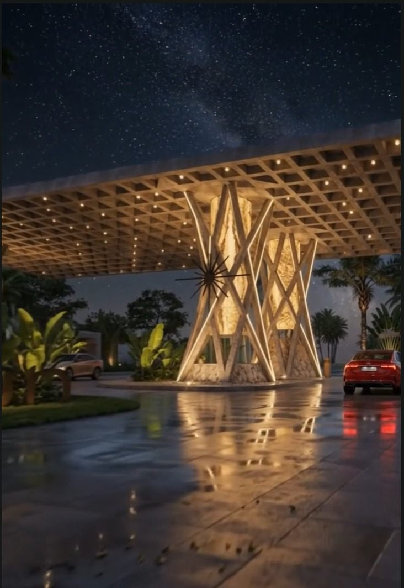
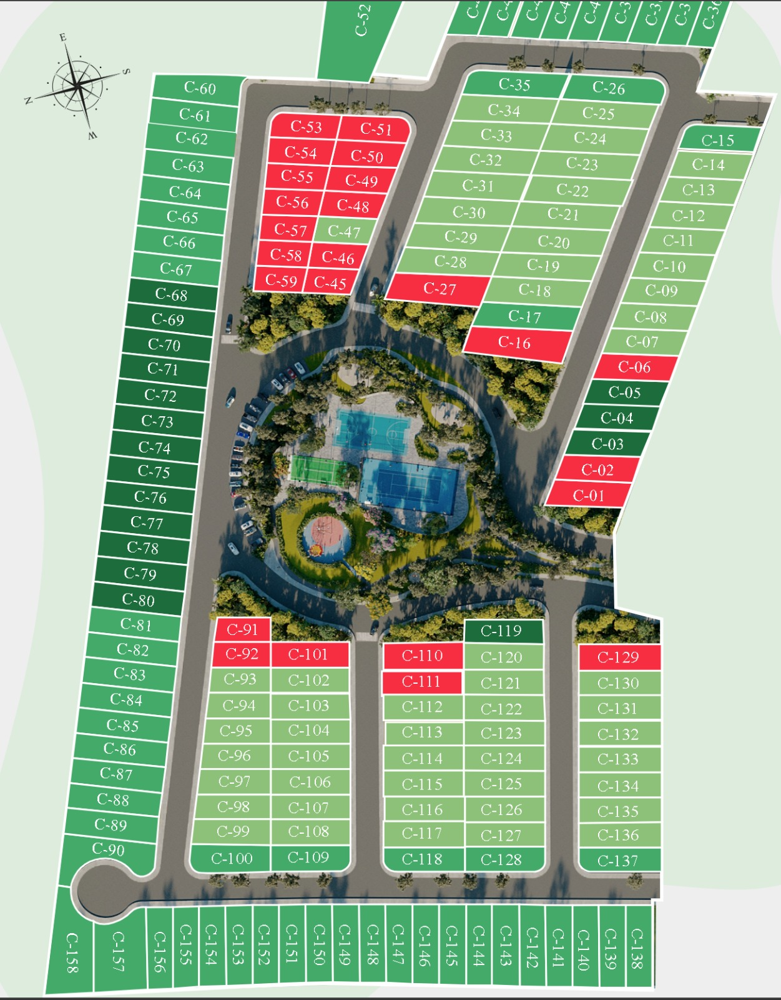

Privada residencial · Mérida
Fotografía del acceso incluida en el material de Lakuun.Un lugar para vivir cada etapa.
Lakuun reúne lotes residenciales, áreas verdes y espacios para convivir, ejercitarse y descansar. Una comunidad planeada para que el día a día tenga más opciones dentro de casa.

Lakuun · Tierra Dorada
La comunidad también se disfruta fuera de casa.
El proyecto se organiza en tres etapas con espacios para reunirse, mantenerse activo y disfrutar al aire libre. El plan maestro del brochure contempla 561 lotes y 32,780 m² de áreas verdes en conjunto.
Desde lotes residenciales con superficie de referencia a partir de 300 m² hasta espacios comunes de distintas escalas, Lakuun propone una vida de comunidad con opciones para diferentes edades y rutinas.
Calles pavimentadas
Banquetas y jardineras
Vegetación endémica
Acceso controlado
Características de urbanización descritas en el brochure; confirma el avance, los servicios y las condiciones de entrega de la etapa disponible.
Casa club
Un punto de encuentro para disfrutar todos los días.
Las fotografías proporcionadas muestran la casa club y sus espacios exteriores, incluida una alberca con canal de nado. El brochure también asigna a la primera etapa áreas de convivencia, bienestar y trabajo.
Confirma con el equipo comercial qué amenidades están actualmente habilitadas y cuáles corresponden a etapas futuras.
Conocer disponibilidad
Tres etapas, distintas experiencias
Encuentra el espacio que va con tu estilo de vida.
El brochure distribuye las amenidades por etapa. Esta organización permite conocer la propuesta completa y preguntar por la fase de interés.
Convivencia y bienestar
Espacios para relajarse, reunirse y mantener una rutina activa.
- Alberca y canal de nado
- Salón de eventos y área lounge
- Gimnasio climatizado y área de yoga
- Coworking y sala de juntas
- Área infantil
- Acceso distintivo y caseta de vigilancia
Tiempo al aire libre
Actividades y rincones para compartir en familia.
- Gimnasios urbanos
- Área de juegos junior
- Pista de jogging y ciclovía
- Jardín de lectura
- Pet park
- Área grill y estacionamiento
Movimiento y recreación
Más alternativas para hacer deporte y disfrutar en comunidad.
- Cancha de usos múltiples
- Cancha de pádel y cancha de tenis
- Pista de jogging y ciclovía
- Gimnasios urbanos
- Área infantil
- Área de picnic
La lista refleja la distribución incluida en el brochure Lakuun 2026. El avance, acceso, equipamiento y calendario de cada amenidad deben confirmarse con el asesor.
Una comunidad con espacio abierto
Áreas verdes que dan respiro al conjunto.
El master plan asigna 32,780 m² a áreas verdes en el proyecto completo. Junto con los espacios recreativos y deportivos, forman parte de una propuesta que busca integrar convivencia y vida al aire libre.
32,780 m²de áreas verdes contempladas en el plan maestro
Superficie total indicada en el brochure; confirma el plano vigente, su distribución y la etapa correspondiente.
Ubicación
Tierra Dorada, Mérida, Yucatán.
El brochure ubica Lakuun en el entorno de Tierra Dorada y destaca su conexión con puntos de interés de Mérida y el norte de Yucatán.
ProgresoChicxulub PuertoDzibilchaltúnAnillo de los Cenotes
Planea tu recorridoSolicita la ubicación exacta, el mapa vigente y las rutas recomendadas para visitar la privada. Las distancias y tiempos dependen del punto de salida y las condiciones de tránsito.
Las referencias geográficas se tomaron del brochure; verifica ubicación y trayectos con el equipo comercial antes de agendar.
Lakuun en video
Mira el proyecto y su entorno.
Reproduce los videos para conocer la propuesta de Lakuun y el recorrido relacionado con la futura Universidad Ibero.
Recorrido hacia la futura Universidad Ibero
Video de referencia del trayecto y el entorno cercano a Lakuun. Consulta con el asesor la ubicación y los tiempos de traslado vigentes.
Conoce Lakuun
Video promocional del desarrollo y su propuesta de comunidad residencial.
El primer video presenta un proyecto universitario futuro; confirma su avance, ubicación y calendario directamente con el asesor.
Proyecto e inventario
Conoce los espacios y revisa las opciones vigentes.
Imágenes y videos de referencia para ayudarte a conocer el desarrollo. Pide al equipo comercial la información actualizada antes de apartar.

Disponibilidad
Disponibilidad · Lakuun
Consulta el plano de la etapa 3 y solicita al asesor las opciones abiertas y sus condiciones actuales.
El plano de colores no incluye una leyenda ni fecha de actualización. Confirma qué lotes están disponibles y cuáles amenidades corresponden a cada etapa.
Solicitar disponibilidadConoce las opciones actuales
Solicitar informes Hablemos de Lakuun y de lo que buscas para tu próxima etapa.
Pide información sobre lotes disponibles, precios, formas de pago, amenidades habilitadas y calendario de las siguientes etapas.